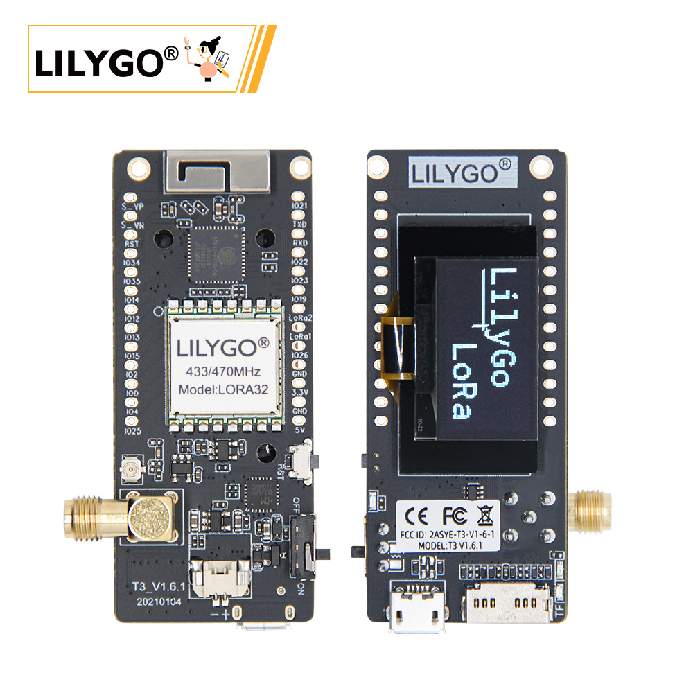
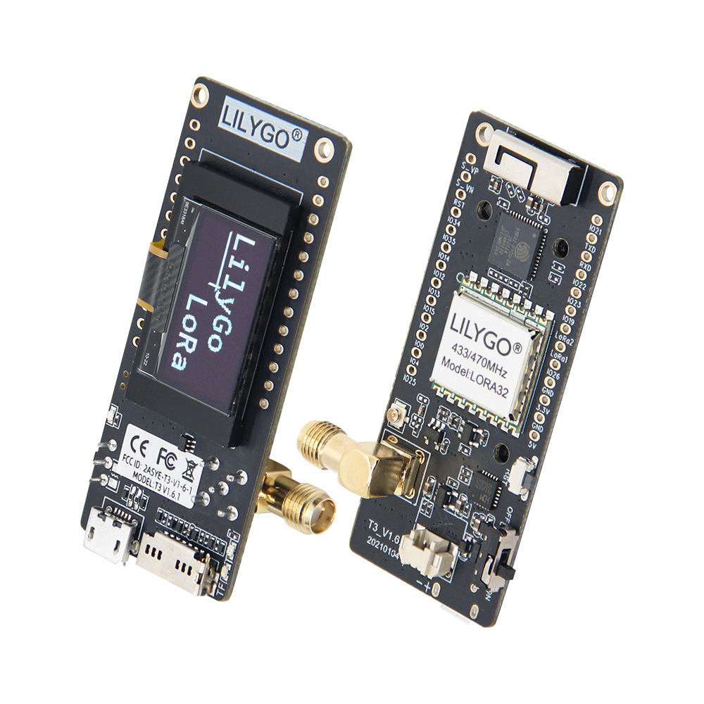
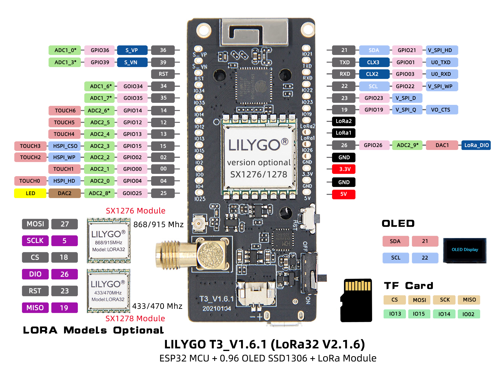
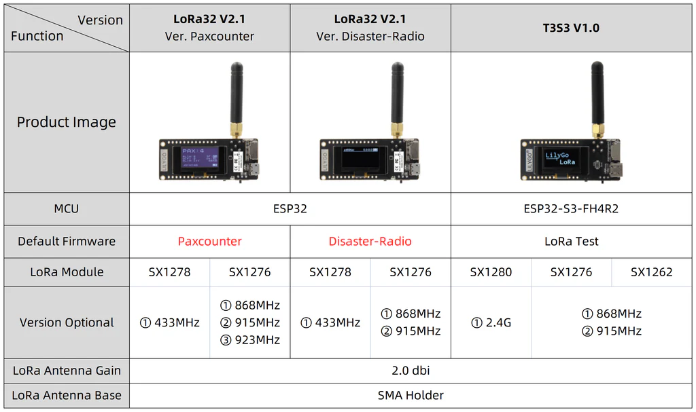
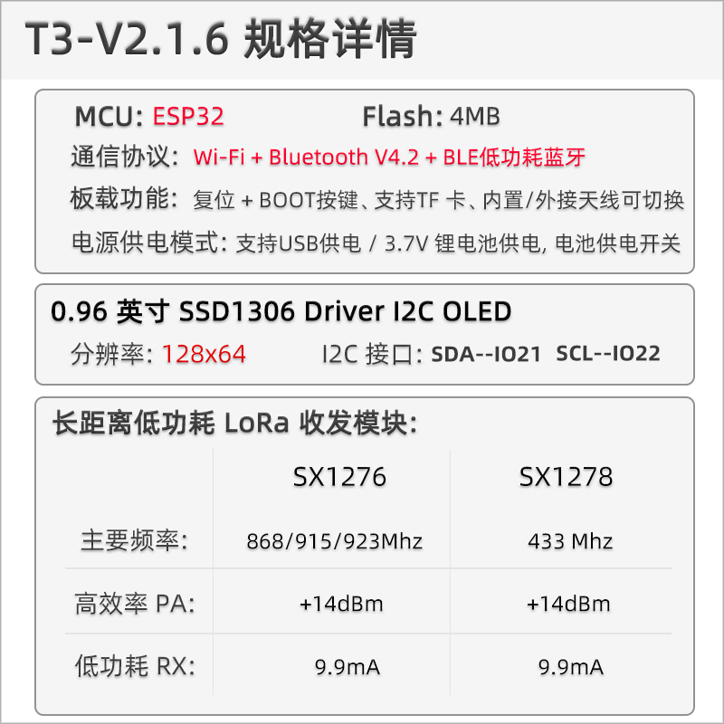

中文 简体
中文 简体LILYGO LoRa32

版本迭代:
| Version | Update date | Update description |
|---|---|---|
| T3_V1.6.1 (LoRa32 V2.1.6) | 最新版本 | 多协议物联网开发板 |
购买链接
| Product | SOC | FLASH | LoRa | Screen | Interface | Link |
|---|---|---|---|---|---|---|
| LoRa32 | ESP32 | 4M | SX1276/SX1278 | 0.96" OLED | USB Micro | LILYGO Mall |
目录
描述
LILYGO T3_V1.6.1（LoRa32 V2.1.6）多协议物联网开发板是一款集成 ESP32 主控（4MB Flash）、0.96英寸 SSD1306 I²C OLED 屏（128×64分辨率）及低功耗 LoRa 模块的复合型硬件平台。
开发板支持 SX1276/SX1278 双频段 LoRa 模块，提供 Wi-Fi + 蓝牙4.2 + BLE 无线协议，支持双电源供电模式（USB接口或3.7V Li-Po电池，带电源切换开关），并具备 TF卡扩展槽和硬件复位/启动按键。LoRa模块可实现 +14dBm发射功率与9.9mA超低接收电流，适用于远程环境监测、LoRaWAN终端、低功耗传感器网关等物联网场景开发。
预览
实物图

引脚图

版本对比

模块
MCU
- 芯片：ESP32
- FLASH：4MB
- 架构：Xtensa LX6 双核
- 无线：Wi-Fi 802.11b/g/n + Bluetooth 4.2 + BLE
屏幕
- 尺寸：0.96英寸 OLED
- 分辨率：128x64px
- 屏幕类型：OLED
- 驱动芯片：SSD1306
- 总线通信协议：I2C
- 引脚：SDA=IO21, SCL=IO22
LoRa
- 芯片：SX1276 / SX1278
- 频率：SX1276: 868/915/923MHz, SX1278: 433MHz
- 发射功率：+14dBm
- 接收电流：9.9mA
串口转换
- 芯片：CH9102
- 功能：USB转串口
存储
- 类型：MicroSD (TF) 卡
- 接口：SPI
电源管理
- 输入：USB Micro 或 3.7V Li-Po 电池
- 特性：电源切换开关
概述

| 组件 | 描述 |
|---|---|
| MCU | ESP32 |
| FLASH | 4MB |
| LoRa | SX1276 (868/915/923MHz) / SX1278 (433MHz) |
| 屏幕 | 0.96英寸 SSD1306 OLED (128×64) |
| 串口芯片 | CH9102 |
| 存储 | TF卡 |
| 无线 | 2.4GHz Wi-Fi + Bluetooth 4.2 + BLE |
| USB | 1 × USB Port (Micro接口) |
| IO 接口 | 2.54mm间距 2×13 拓展IO接口 |
| 拓展接口 | 3D WiFi天线 + LoRa外接天线 + 1.25mm JST GH 电源接口 |
| 按键 | RESET + BOOT |
| 电源输入 | 5V/500mA |
| 孔位 | 2 × 2mm定位孔 |
| 尺寸 | 66×36×15mm |
快速开始
示例支持
./examples/
├── ArduinoLoRa # Only support SX1276/SX1278 radio module (仅支持 SX1276/SX1278 无线电模块)
│ ├── LoRaReceiver
│ └── LoRaSender
├── Display # Only supports TBeam TFT Shield
│ ├── Free_Font_Demo
│ ├── TBeam_TFT_Shield
│ ├── TFT_Char_times
│ └── UTFT_demo
├── GPS # T-Beam GPS demo examples
│ ├── TinyGPS_Example
│ ├── TinyGPS_FullExample
│ ├── TinyGPS_KitchenSink
│ ├── UBlox_BasicNMEARead # Only support Ublox GNSS Module
│ ├── UBlox_NMEAParsing # Only support Ublox GNSS Module
│ ├── UBlox_OutputRate # Only support Ublox GNSS Module
│ └── UBlox_Recovery # Only support Ublox GNSS Module
├── LoRaWAN # LoRaWAN examples
│ ├── LMIC_Library_OTTA
│ └── RadioLib_OTAA
├── OLED
│ ├── SH1106FontUsage
│ ├── SH1106GraphicsTest
│ ├── SH1106IconMenu
│ ├── SH1106PrintUTF8
│ ├── SSD1306SimpleDemo
│ └── SSD1306UiDemo
├── PMU # T-Beam & T-Beam S3 PMU demo examples
├── RadioLibExamples # RadioLib examples,Support SX1276/78/62/80...
│ ├── Receive_Interrupt
│ └── Transmit_Interrupt
├── Sensor # Sensor examples,only support t-beams3-supreme
│ ├── BME280_AdvancedsettingsExample
│ ├── BME280_TestExample
│ ├── BME280_UnifiedExample
│ ├── PCF8563_AlarmByUnits
│ ├── PCF8563_SimpleTime
│ ├── PCF8563_TimeLib
│ ├── PCF8563_TimeSynchronization
│ ├── QMC6310_CalibrateExample
│ ├── QMC6310_CompassExample
│ ├── QMC6310_GetDataExample
│ ├── QMC6310_GetPolarExample
│ ├── QMI8658_BlockExample
│ ├── QMI8658_GetDataExample
│ ├── QMI8658_InterruptBlockExample
│ ├── QMI8658_InterruptExample
│ ├── QMI8658_LockingMechanismExample
│ ├── QMI8658_MadgwickAHRS
│ ├── QMI8658_PedometerExample
│ ├── QMI8658_ReadFromFifoExample
│ └── QMI8658_WakeOnMotion
|── T3S3Factory # T3 S3 factory test examples
└── Factory # T-Beam & T-Beam S3 and BPF factory test examples
PlatformIO
- Install the CH9102 USB bridge driver for the first time.
- Install Visual Studio Code and Python
- 在
Visual Studio Code的扩展中搜索“PlatformIO”插件并安装它。 - 安装完成后，您需要重新启动
Visual Studio Code。 - 重新启动
Visual Studio Code后，在Visual Studio Code左上角选择“文件” -> “打开文件夹” -> 选择“LilyGo-LoRa-Series”目录 - 等待第三方依赖库的安装完成
- 点击
platformio.ini文件，然后在platformio列中 - 在
default_envs中选择您想要使用的板卡名称，并取消其注释。 - 取消对
src_dir = xxxx中的一行注释，以确保只有一行生效。请注意示例中的注释，它们表明了哪些行有效，哪些行无效。 - 点击左下角的（✔）符号进行编译11. 将电路板连接到计算机的 USB-C 接口，Micro-USB 接口用于模块固件升级。
- 点击（→）上传固件
- 点击（插头符号）以监控串行输出
- 如果无法写入，或者 USB 设备持续闪烁，请查看下面的常见问题解答。
Arduino
- 首次安装“CH9102 USB 适配器”驱动程序。
- 安装Arduino集成开发环境
- 安装 Arduino ESP32
- 将“lib”目录中的所有文件夹复制到“草图书签位置”目录中。如何找到您自己的库文件的位置？请参阅此处
- Windows：
C:\Users\{用户名}\Documents\Arduino - macOS：
/Users/{用户名}/Documents/Arduino - Linux：
/home/{用户名}/Arduino
- 打开相应的示例
- 打开下载的“LilyGo-LoRa-Series”
- 打开“示例”
- 选择示例文件并打开以“ino”结尾的文件
- 在 Arduino 上，我先在 DE 工具项目中选择相应的板子，然后在下方的列表中点击相应的选项以进行选择。
| Name | Value |
|---|---|
| Board | ESP32 Dev Module |
| Port | Your port |
| CPU Frequency | 240MHZ(WiFi/BT) |
| Core Debug Level | None |
| Erase All Flash Before Sketch Upload | Disable |
| Events Run On | Core1 |
| Flash Frequency | 80MHZ |
| Flash Mode | QIO |
| Flash Size | 4MB(32Mb) |
| JTAG Adapter | Disabled |
| Arduino Runs On | Core1 |
| Partition Scheme | Huge APP (3MB No OTA/1MB SPIFFS) |
| PSRAM | Enable |
| Upload Speed | 921600 |
| Programmer | Esptool |
- 请根据您的开发板型号取消每个示例中的
utilities.h文件的注释，例如T3_V1_3_SX1276或T3_V1_3_SX1278，否则编译时会报错。 - 上传示例
开发平台
引脚总览
LoRa32 1.3
| Name | GPIO NUM | Free |
|---|---|---|
| OLED(SSD1306) SDA | 21 | ❌ |
| OLED(SSD1306) SCL | 22 | ❌ |
| LoRa(SX1276) SCK | 18 | ❌ |
| LoRa(SX1276) MISO | 19 | ❌ |
| LoRa(SX1276) MOSI | 27 | ❌ |
| LoRa(SX1276) RESET | 14 | ❌ |
| LoRa(SX1276) DIO0 | 26 | ❌ |
| LoRa(SX1276) DIO1 | 33 | ❌ |
| LoRa(SX1276) CS | 18 | ❌ |
| Battery ADC | 35 | ❌ |
LoRa32 1.6.1
| Name | GPIO NUM | Free |
|---|---|---|
| OLED(SSD1306) SDA | 21 | ❌ |
| OLED(SSD1306) SCL | 22 | ❌ |
| SD CS | 13 | ❌ |
| SD MOSI | 15 | ❌ |
| SD MISO | 2 | ❌ |
| SD SCK | 14 | ❌ |
| LoRa(SX1276) SCK | 5 | ❌ |
| LoRa(SX1276) MISO | 19 | ❌ |
| LoRa(SX1276) MOSI | 27 | ❌ |
| LoRa(SX1276) RESET | 23 | ❌ |
| LoRa(SX1276) DIO1 | 33 | ❌ |
| LoRa(SX1276) DIO2 | 32 | ❌ |
| LoRa(SX1276) CS | 18 | ❌ |
| Battery ADC | 35 | ❌ |
| On Board LED | 25 | ❌ |
LoRa32 TCXO
| Name | GPIO NUM | Free |
|---|---|---|
| OLED(SSD1306) SDA | 21 | ❌ |
| OLED(SSD1306) SCL | 22 | ❌ |
| SD CS | 13 | ❌ |
| SD MOSI | 15 | ❌ |
| SD MISO | 2 | ❌ |
| SD SCK | 14 | ❌ |
| LoRa(SX1276) SCK | 5 | ❌ |
| LoRa(SX1276) MISO | 19 | ❌ |
| LoRa(SX1276) MOSI | 27 | ❌ |
| LoRa(SX1276) RESET | 23 | ❌ |
| LoRa(SX1276) DIO0 | 26 | ❌ |
| LoRa(SX1276) DIO1 | 32 | ❌ |
| LoRa(SX1276) CS | 7 | ❌ |
| LoRa(SX1276) TCXO EN | 12 | ❌ |
| Battery ADC | 35 | ❌ |
| On Board LED | 25 | ❌ |
- ESP32 芯片的 GPIO33 及其以上的 GPIO 只能用于输入功能，不能设置为输出功能。
- 在上传代码时需要移除 SD 卡，否则代码无法下载
- 在初始化无线电之前，TCXO EN 必须设置为高电平
相关测试
测试数据待补充
常见问题
Q. LoRa32 和 T3-S3 有什么区别？
A. LoRa32 使用 ESP32 + SX1276/78 LoRa芯片，而 T3-S3 使用 ESP32-S3 + SX1262/80 LoRa芯片，处理器和LoRa芯片都不同。Q. 如何选择 SX1276 和 SX1278 版本？
A. 根据所在地区的频率法规选择：SX1276 支持 868/915/923MHz，SX1278 支持 433MHz。Q. OLED 屏幕不显示？
A. 检查 I2C 地址配置（SSD1306 通常为 0x3C），确认 SDA=IO21、SCL=IO22 的连接。Q. LoRa 通信距离不理想？
A. 检查天线连接，确保在开阔环境使用，考虑使用外接天线并正确配置阻抗匹配。Q. 程序烧录失败？
A. 确保驱动安装正确，按住 BOOT 按键再点击 RESET 进入下载模式。
项目
资料
依赖库
- arduino-LoRa - LoRa 通信库
- RadioLib - 无线通信库
- U8g2 - OLED 显示库
- Adafruit_SSD1306 - SSD1306 驱动
- ESP8266_SSD1306 - OLED 显示库
- TFT_eSPI - TFT 显示库
- SD - SD 卡库